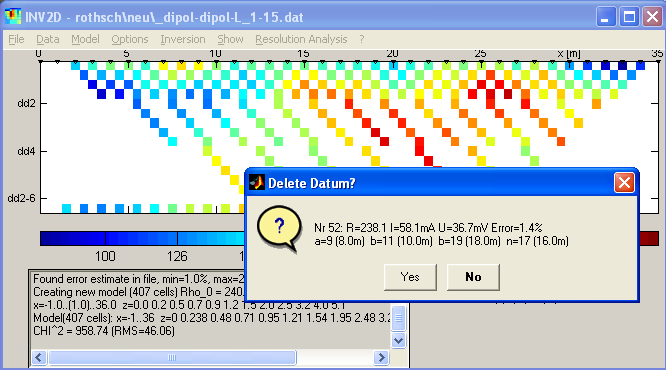
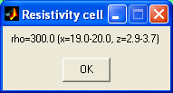
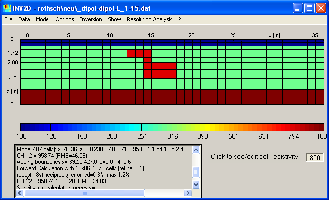

| Start Page | Menu Items | Interactive Features | Hotkeys | Tutorial |
When displaying data, it is possible to click on the coloured block representing
on data point to see the positions of the electrodes, the apparent resistivity,
and (if present) additional information like standard deviation, voltage or
current.
By clicking the Button "Yes" the datum can be deleted, the plot is
then rebuilt.
After processing the data the data set can be saved or exported before interpreting.

In the same way like data the model parameter can be viewed by clicking of the colour box representing the model cell. The resistivity and the cell boundaries are show in a dialog.

When typing a resistivity value in the edit window near the lower right corner, the cell resistivities can be edited. A single klick changes the clicked cell resistivity, whereas by dragging a ragged box is created filling all included model cells. Thus, complicated model structures can be created as demonstrated in the figure below.

It is recommended to save (synthetically created) models using the Model Export function.